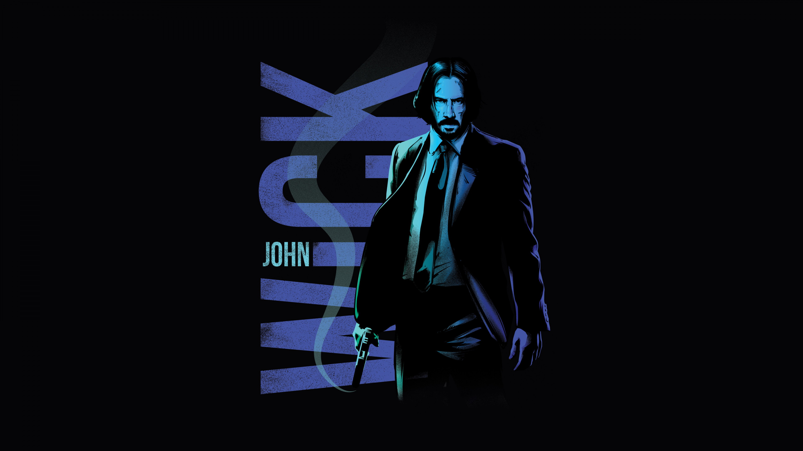

About John Wick
John Wick, also known as Baba Yaga, is a legendary assassin who seeks vengeance against those who wronged him. Played by Keanu Reeves, John Wick is known for his extraordinary combat skills, relentless determination, and code of honor. His story began when a group of men killed his beloved dog, a last gift from his deceased wife, pushing him back into the dangerous world he left behind.
Movies
- John Wick (2014)
- John Wick: Chapter 2 (2017)
- John Wick: Chapter 3 – Parabellum (2019)
- John Wick: Chapter 4 (2023)